sector23 supernovae (23 total)
Each figure has three panels. The top panel shows the transient light curve, the middle panel shows the local background (estimated in an annulus), and the bottom panel shows a "background-model corrected" light curve. Details about the background model are in the README.
The vertical red line marks the time of discovery reported to TNS. Other useful metadata from TNS is in the figure title.
Note that the top and bottom panel are in magnitudes, while the middle panel is in differential flux units. The magnitudes are calibrated to the flux in the reference image used for image subtraction. Thus, flux from the host galaxy is included in these magnitudes.
3-sigma upper limits are plotted as triangles with no errorbars. A typical limiting magnitude is 19.6 in 30 minutes or 18.4 in 200 seconds (for low backgrounds).
The links allow you to download the light curve data as a text file.
More details in the README.
2020euy
 2020hdw
2020hdw
 2020ghu
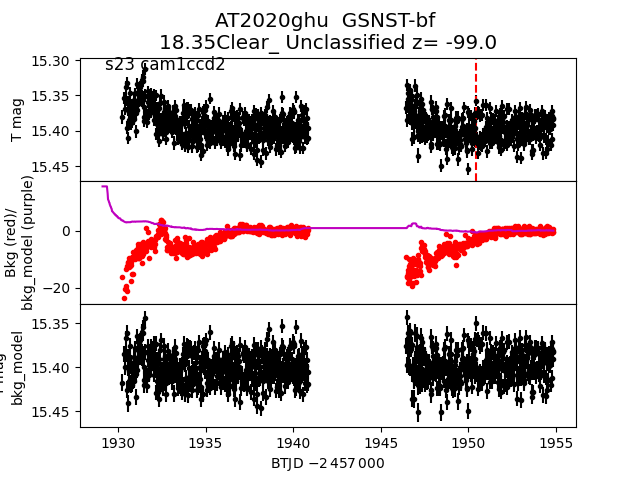
2020hdh
2020ghu
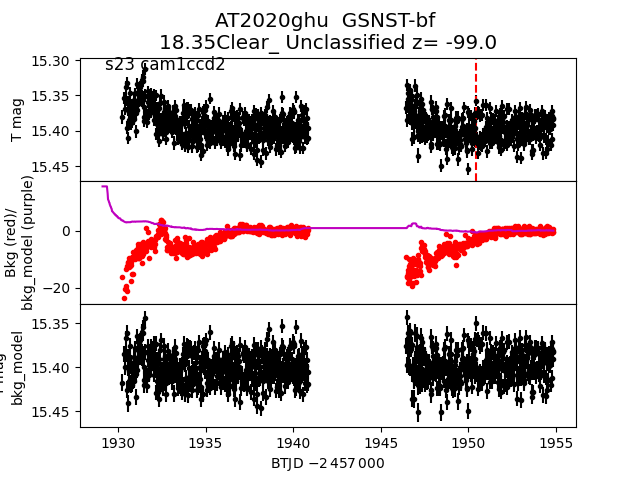
2020hdh
 2020ghp
2020ghp
 2020fcx
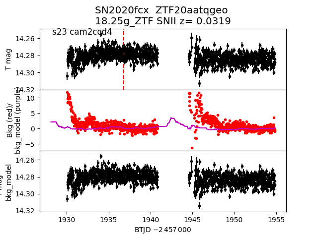
2020exj
2020fcx
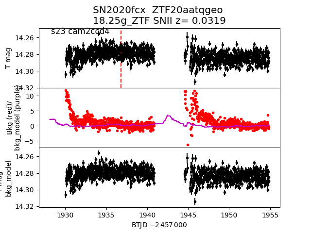
2020exj
 2020hhh
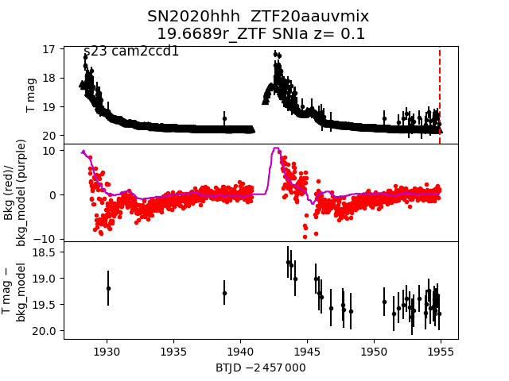
2020eyf
2020hhh
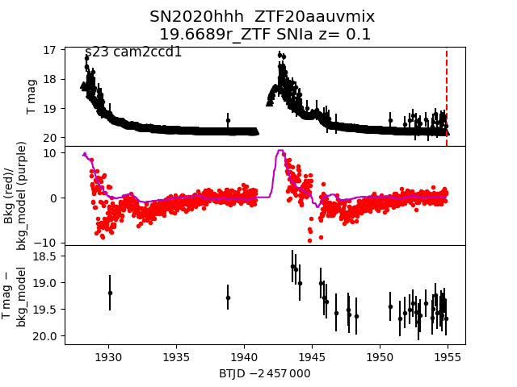
2020eyf
 2020hph
2020hph
 2020fcw
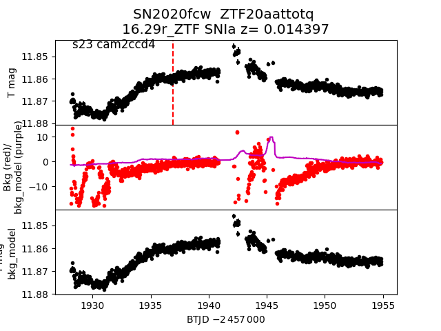
2020ftl
2020fcw
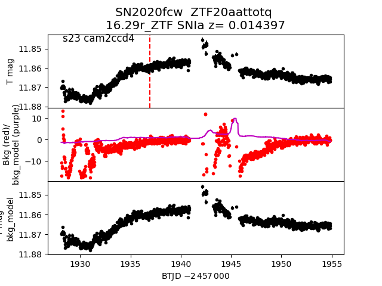
2020ftl
 2020fbj
2020fbj
 2020hfk
2020hfk
 2020hsh
2020hsh
 2020hqy
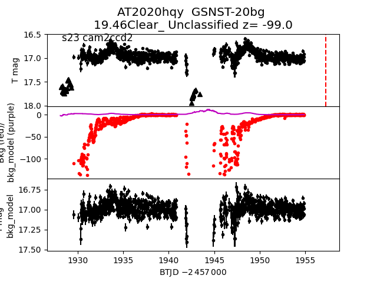
2020epi
2020hqy
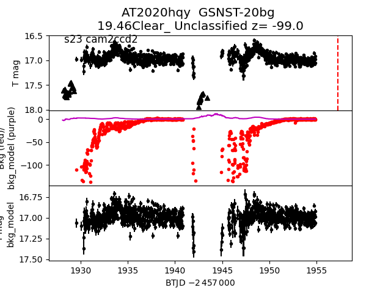
2020epi
 2020flg
2020flg
 2020fqv
2020fqv
 2020fqi
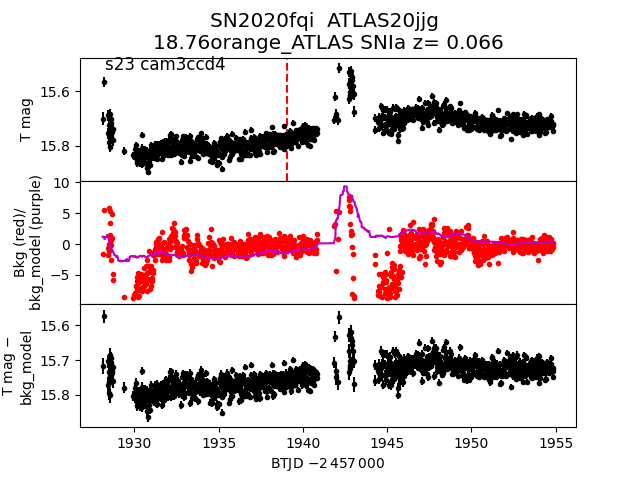
2020hln
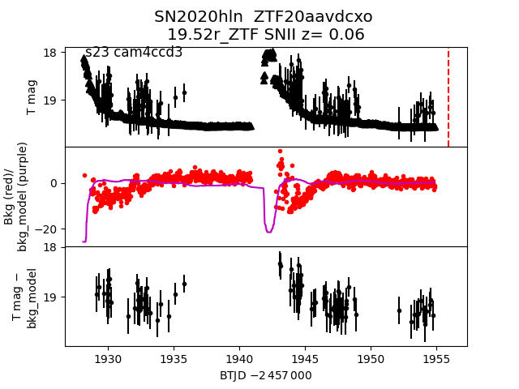
2020hgw
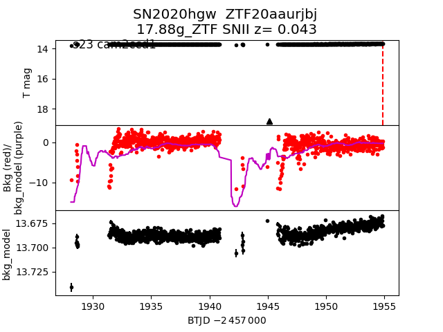
2020etd
2020fqi
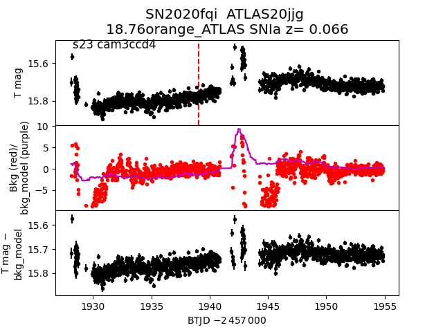
2020hln
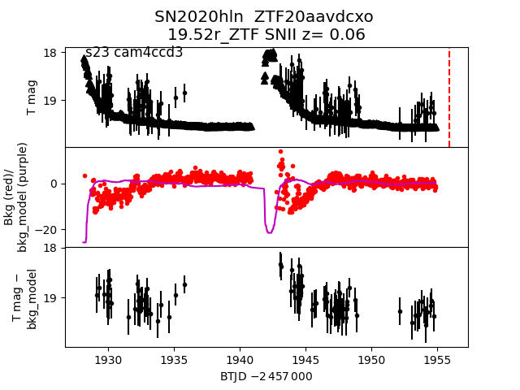
2020hgw
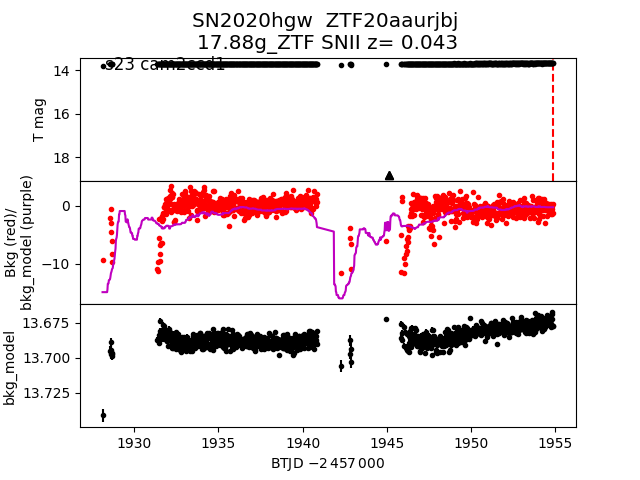
2020etd